수질환경산업기사 (2016-05-08 기출문제)
1과목: 수질오염개론
1. Cd2+를 함유하는 산성수용액의 pH를 증가시키면 침전이 생긴다. pH를 11로 증가시켰을 때 Cd2+ 농도(mg/L)는? (단, Cd(OH)2의 Ksp = 4 × 10-14, 원자량은 Cd = 112, O = 16, H = 1, 기타 공존이온의 영향이나 착염에 의한 재용해도는 없는 것으로 본다.)
- 3.12 × 10-3
- 3.46 × 10-3
- 4.48 × 10-3
- 6.29 × 10-3
(정답률: 48%)

2. 물의 동점성계수를 가장 알맞게 나타낸 것은?
- 전단력 τ와 점성계수 μ를 곱한 값이다.
- 전단력 τ과 밀도 ρ를 곱한 값이다.
- 점성계수 μ를 전단력 τ로 나눈 값이다.
- 점성계수 μ를 밀도 ρ로 나눈 값이다.
(정답률: 86%)
3. 일반적으로 물속의 용존산소(DO)농도가 증가하게 되는 경우는?
- 수온이 낮고 기압이 높을 때
- 수온이 낮고 기압이 낮을 때
- 수온이 높고 기압이 높을 때
- 수온이 높고 기압이 낮을 때
(정답률: 87%)
4. 일반적인 하천에 유기물질이 배출되었을 때 하천의 수질변화를 나타낸 것이다. 그림 중 (2)곡선이 나타내는 수질지표로 가장 적절한 것은?
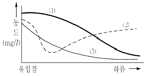
- DO
- BOD
- SS
- COD
(정답률: 83%)
5. 성장을 위한 먹이(탄소원) 취득 방법이 나머지와 크게 다른 것은?
- 조류
- 곰팡이
- 질산화박테리아
- 황박테리아
(정답률: 66%)
6. 반응조에 주입된 물감의 10%, 90%가 유출되기까지의 시간은 t10, t90 이라 할 때 Morrill지수는 t90/t10 으로 나타낸다. 이상적인 Plug flow 인 경우의 Morrill지수 값은?
- 1 보다 작다.
- 1 이다.
- 1 보다 크다.
- 0 이다.
(정답률: 89%)
7. 0.25M MgCl2 용액의 이온강도는?
- 0.45
- 0.55
- 0.65
- 0.75
(정답률: 54%)
8. pH = 6.0인 용액의 산도의 8배를 가진 용액의 pH는?
- 5.1
- 5.3
- 5.4
- 5.6
(정답률: 64%)
9. 다음 중 하수처리구역이 아닌 경우 오수, 분뇨의 처리방안으로 옳은 것은?
- 분뇨는 단독 정화조에서 처리하여 생활오수와 함께 BOD 50mg/L 이하로 공공수역에 방류시킨다.
- 분뇨와 생활오수를 함께 오수처리시설에 유입시켜 BOD 20mg/L 이하로 처리하여 공공수역에 방류시킨다.
- 분뇨와 생활오수를 함께 우, 오수분류식 하수처리장에서 처리한 후 BOD 20mg/L이하로 공공수역에 방류시킨다.
- 분뇨는 단독 정화조에서 처리하고 생활오수는 우, 오수분류식 하수처리장에서 처리한 후 BOD 20mg/L 이하로 처리하여 공공수역에 방류시킨다.
(정답률: 59%)
10. 자정계수(f)에 관한 다음 설명 중 잘못된 것은?
- 자정계수는 소규모 저수지보다 대형호수가 크다.
- [재폭기계수/탈산소계수]로 나타낸다.
- 수온이 증가할수록 자정계수는 높아진다.
- 하천의 유속이 클수록 자정계수는 커진다.
(정답률: 70%)
11. 수분함량 97%의 슬러지 14.7m3를 수분함량 85%로 농축하면 농축 후 슬러지 용적(m3)은? (단, 슬러지 비중은 1.0)
- 1.92
- 2.94
- 3.21
- 4.43
(정답률: 72%)
12. 다음 중 지하수에 대한 설명 중 틀린 것은?
- 천층수 : 지하로 침투한 물이 제1불투수층 위에 고인 물로, 공기와의 접촉가능성이 커 산소가 존재할 경우 유기물은 미생물의 호기성 활동에 의해 분해될 가능성이 크다.
- 심층수 : 제1불침투수층과 제2불침투수층 사이의 피압지하수를 말하며, 지층의 정화작용으로 거의 무균에 가깝고 수온과 성분의 변화가 거의 없다.
- 용천수 : 지표수가 지하로 침투하여 암석 또는 점토와 같은 불투수층에 차단되어 지표로 솟아나온 것으로, 유기성 및 무기성 불순물의 함유도가 낮고, 세균도 매우 작다.
- 복류수 : 하천, 저수지 혹은 호수의 바닥, 자갈 모래층에 함유되어 있는 물로, 지표수보다 수질이 나쁘며 철과 망간과 같은 광물질 함유량도 높다.
(정답률: 67%)
13. 산(Acid)이 물에 녹았을 때 가지는 특성과 가장 거리가 먼 것은?
- 맛이 시다.
- 미끈미끈거리며 염기를 중화한다.
- 푸른 리트머스시험지를 붉게 한다.
- 활성을 띤 금속과 반응하여 원소상태의 수소를 발생시킨다.
(정답률: 82%)
14. 물의 물성을 나타내는 값으로 가장 거리가 먼 것은?
- 비점 : 100℃ (1기압하)
- 비열 : 1.0cal/g℃(15℃)
- 기화열 : 539cal/g(100℃)
- 융해열 : 179.4cal/g(0℃)
(정답률: 59%)
15. 우리나라에서 주로 설치·사용되어진 분뇨정화조의 형태로 가장 적합하게 짝지어진 것은?
- 임호프탱크 - 부패탱크
- 접촉포기법 - 접촉안정법
- 부패탱크 - 접촉포기법
- 임호프탱크 – 접촉포기법
(정답률: 81%)
16. 수중에 탄산가스 농도나 암모니아성 질소의 농도가 증가하며 Fungi가 사라지는 하천의 변화과정 지대는? (단, Whipple의 4지대 기준)
- 활발한 분해지대
- 점진적 분해지대
- 분해지대
- 점진적 회복지대
(정답률: 84%)
17. 폐수의 분석결과 COD 400mg/L이었고, BOD5가 250mg/L이었다면 NBDCOD(mg/L)는? (단, 탈산소계수 K1(밑이 10) = 0.2day-1이다.)
- 78
- 122
- 172
- 210
(정답률: 70%)
18. 미생물의 발육과정을 순서대로 나열한 것은?
- 유도기 – 대수증식기 – 정지기 - 사멸기
- 대수증식기 – 정지기 – 유도기 - 사멸기
- 사멸기 – 대수증식기 – 유도기 - 정지기
- 정지기 – 유도기 – 대수증식기 – 사멸기
(정답률: 92%)
19. 우리나라 물이용 형태에서 볼 때 수요가 가장 많은 분야는?
- 공업용수
- 농업용수
- 유지용수
- 생활용수
(정답률: 91%)
20. Glucose(C6H12O6) 800mg/L 용액을 호기성 처리 시 필요한 이론적 인량(P, mg/L)은? (단, BOD5 : N : P = 100 : 5 : 1, K1 = 0.1day-1, 상용대수기준)
- 약 9.6
- 약 7.9
- 약 5.8
- 약 3.6
(정답률: 68%)
2과목: 수질오염방지기술
21. 3차 처리 프로세스 중 5단계-Bardenpho 프로세스에 대한 설명으로 가장 거리가 먼 것은?
- 1차 포기조에서는 질산화가 일어난다.
- 혐기조에서는 용해성 인의 과잉흡수가 일어난다.
- 인의 제거는 인의 함량이 높은 잉여슬러지를 제거함으로 가능하다.
- 무산소조에서는 탈질화과정이 일어난다.
(정답률: 70%)
22. 2,700m3/day의 폐수처리를 위해 폭 5m, 길이 15m, 깊이 3m인 침전지(유효수심이 2.7m)를 사용하고 있다면 침점된 슬러지가 바닥에서 유효수심의 1/5 이 찬 경우 침전지의 수평유속(m/min)은?
- 약 0.17
- 약 0.42
- 약 0.82
- 약 1.23
(정답률: 40%)
23. 가스 상태의 염소가 물에 들어가면 가수분해와 이온화반응이 일어나 살균력을 나타낸다. 이 때 살균력이 가장 높은 pH 범위는?
- 산성영역
- 알칼리성영역
- 중성영역
- pH와 관계 없다.
(정답률: 74%)
24. 차아염소산과 수중의 암모니아나 유기성 질소화합물이 반응하여 클로라민을 형성할 때 pH가 9인 경우 가장 많이 존재하게되는 것은?
- 모노클로라민
- 디클로라민
- 트리클로라민
- 헤테로클로라민
(정답률: 62%)
25. 아래에 주어진 조건에서 폐슬러지 배출량(m3/day)은? (단, 포기조 용적 : 10,000m3, 포기조 MLSS 농도 : 3,000mg/L, SRT : 3day, 폐슬러지 함수율 : 99%, 유출수 SS 농도는 무시)
- 1,000
- 1,500
- 2,000
- 2,500
(정답률: 48%)
26. 혐기적 공정 운전에 가장 중요한 인자에 해당되지 않는 것은?
- pH
- 교반(Mixing)
- 암모니아와 황산염의 제어
- 염소요구량
(정답률: 58%)
27. 1차 처리된 분뇨의 2차 처리를 위해 폭기조, 2차 침전지로 구성된 활성슬러지 공정을 운영하고 있다. 운영조건이 다음과 같을 때 폭기조 내의 고형물 체류시간(day)은? (단, 유입유량 200m3/day, 폭기조 용량 1,000m3, 잉여슬러지 배출량 50m3/day, 반송슬러지 SS 농도 1%, MLSS 농도 2,500mg/L, 2차 침전지 유출수 SS농도 0mg/L)
- 4
- 5
- 6
- 7
(정답률: 52%)
28. 구형입자의 침강속도가 stokes법칙에 따른다고 할 때 직경 0.5mm이고, 비중이 2.5인 구형입자의 침강속도(m/sec)는? (단, 물의 밀도는 1,000kg/m3이고, 점성계수 μ는 1.002 × 10-3kg/m·sec라고 가정)
- 0.1
- 0.2
- 0.3
- 0.4
(정답률: 59%)
29. 유량이 2,500m3/day인 폐수를 활성슬러지법으로 처리하고자 한다. 폭기조로 유입되는 SS농도가 200mg/L이고, 포기조 내의 MLSS 농도가 2,000mg/L이며, 포기조용적이 2,000m3일 때 슬러지 일령(day)은?
- 3
- 4
- 6
- 8
(정답률: 47%)
30. 유기성폐하수의 고도처리 및 효율적인 처리법으로 사용되고 있는 미생물자기조립법에 의한 처리방법이 아닌 것은?
- AUSB법
- UASB법
- SBR법
- USB법
(정답률: 74%)
31. 인(P)의 제거방법 중 금속(Al, Fe)염 첨가법의 장점이라 볼 수 없는 것은?
- 기존시설에 적용이 비교적 쉽다.
- 방류수의 인 농도를 금속염 주입량에 의하여 최대의 효율을 나타낼 수 있다.
- 처리실적이 많고 제거조작이 간편, 명확하다.
- 금속염을 사용하지 않는 재래식폐수처리장의 슬러지보다 탈수가 용이하다.
(정답률: 54%)
32. 염소 요구량이 5mg/L인 하수 처리수에 잔류염소 농도가 0.5mg/L가 되도록 염소를 주입하려고 한다. 이 때 염소 주입량(mg/L)은?
- 4.5
- 5.0
- 5.5
- 6.0
(정답률: 71%)
33. 미생물접착용 회전원판의 지름이 3m이며, 740매로 구성되었다. 유입수량이 1,000m3, BOD 150ppm일 경우 수량부하(L/m2)와 BOD부하(g/m2)는?
- 370, 75
- 95.6, 14.3
- 74.0, 50
- 246, 450
(정답률: 63%)
34. BOD5가 85mg/L인 하수가 완전혼합 활성슬러지공정으로 처리된다. 유출수의 BOD5가 15mg/L, 온도 20℃, 유입 유량 40,000톤/일, MLVSS가 2,000mg/L, Y값 0.6mgVSS/mgBOD5, Kd값 0.6d-1, 미생물체류시간이 10일이라면 Y값과 Kd값을 이용한 반응조의 부피(m3)는? (단, 비중은 1.0 기준)
- 800
- 1000
- 1200
- 1400
(정답률: 52%)
35. 용존산소와 미생물의 관계를 설명한 것으로 틀린 것은?
- 호기성 미생물은 호흡을 위해 물 속의 용존산소를 섭취한다.
- 혐기성 미생물은 호흡을 위해 화학적으로 결합된 산화물에서 산소를 섭취한다.
- 임의성 미생물은 호기성 환경이나 임의성 환경에 관계없이 성장하는 미생물을 의미한다.
- 혐기성 미생물은 모든 종류의 산소가 차단된 상태에서 잘 성장한다.
(정답률: 62%)
36. 흡착에 대한 설명으로 가장 거리가 먼 것은?
- 흡착은 보통 물리적 흡착과 화학적 흡착으로 분류한다.
- 화학적 흡착은 주로 van der waals의 힘에 기인하며 비가역적이다.
- 흡착제는 단위 질량당 표면적이 큰 활성탄, 제올라이트 등이 사용된다.
- 활성탄은 코코넛 껍질, 석탄 등을 탄화시킨 후 뜨거운 공기나 증기로 활성화시켜 제조한다.
(정답률: 75%)
37. 하수고도처리를 위한 단일단계 질산화공정(부유성장식)에 관한 설명으로 틀린 것은?
- BOD/TKN 비가 높아서 안정적인 MLSS 운영이 가능함
- 독성물질에 대한 질산화 저해 방지가 가능함
- 온도가 낮을 경우 반응조 용적이 매우 크게 소요됨
- 운전의 안정성은 미생물 반송을 위한 이차침전지의 운전에 좌우됨
(정답률: 38%)
38. 표준활성슬러지법의 특성과 가장 거리가 먼 것은? (단, 하수도 시설기준 기준)
- MLSS농도(mg/L) : 1,500 ~ 2,500
- 반응조의 수심(m) : 2 ~ 3
- HRT(시간) : 6 ~ 8
- SRT(일) : 3 ~ 6
(정답률: 66%)
39. 직경이 10m이고 평균 길이가 2.5m인 1차 침전지가 1,200m3/d의 폐수를 처리할 때 체류시간(hr)은?
- 약 2
- 약 4
- 약 6
- 약 8
(정답률: 41%)
40. 철과 망간 제거방법으로 사용되는 산화제는?
- 과망간산염
- 수산화나트륨
- 산화칼슘
- 석회
(정답률: 74%)
3과목: 수질오염공정시험방법
41. 수질오염공정시험기준 중 온도표시에 관한 설명으로 옳지 않는 것은?
- 찬 곳은 따로 규정이 없는 한 0 ~ 15℃의 곳을 뜻한다.
- 냉수는 15℃ 이하를 말한다.
- 온수는 60~70℃를 말한다.
- 시험은 따로 규정이 없는 한 실온에서 조작한다.
(정답률: 77%)
42. 수질오염공정시험기준 총칙에 정의된 용어에 관한 설명으로 가장 거리가 먼 것은?
- “표준편차율”이라 함은 표준편차를 정량범위로 나눈 값의 백분율이다.
- “약”이라 함은 기재된 양에 대하여 ±10% 이상의 차가 있어서는 안 된다.
- 시험조작 중 “즉시”란 30초 이내에 표시된 조작을 하는 것을 뜻한다.
- “항량으로 될 때까지 건조한다.”라 함은 같은 조건에서 1시간 더 건조할 때 전 후 무게의 차가 g당 0.3mg 이하일 때를 말한다.
(정답률: 67%)
43. 순수한 물 150mL에 에틸알코올(비중0.79) 80mL를 혼합하였을 때 이 용액 중의 에틸알코올 농도(W/W%)는?
- 약 30%
- 약 35%
- 약 40%
- 약 45%
(정답률: 59%)
44. 이온크로마토그래피의 기분구성에 관한 설명으로 가장 거리가 먼 것은?
- 펌프 : 150~350kg/cm2 압력에서 사용될 수 있어야 한다.
- 제거장치(억제기) : 고용량의 음이온 교환수지를 충전시킬 컬럼형과 음이온 교환막으로 된 격막형이 있다.
- 분리컬럼 : 유리 또는 에폭시 수지로 만든 관에 이온교환체를 충전시킨 것이다.
- 검출기 : 일반적으로 음이온 분석에는 전기전도도 검출기를 사용한다.
(정답률: 47%)
45. 익류(over flow)폭이 5m인 유분리기(oil separator)로부터 폐수가 넘쳐흐르고 있다. 넘쳐흐르는 부분의 수두를 측정하니 10cm로 하루종일 변동이 없었다. 배출하는 하루 유량은? (단, Q[m3/s] = 1.7bh3/2)
- 1.21 × 104m3/day
- 2.32 × 104m3/day
- 3.43 × 104m3/day
- 4.54 × 104m3/day
(정답률: 50%)
46. 식물성 플랑크톤(조류)의 저배율 방법에 의한 정량시험 시 주의사항에 관한 내용으로 틀린 것은?
- 세즈윅-라프터 챔버는 조작이 편리하고 재현성이 높아 미소 플랑크톤의 검경에 적절하다.
- 정체시간이 짧을 경우 충분히 침전되지 않은 개체가 계수 시 제외되어 오차 유발요인이 된다.
- 시료를 챔버에 채울 때 피펫은 입구가 넓은 것을 사용하는 것이 좋다.
- 계수 시 스트립을 이용할 경우, 양쪽 경계면에 걸린 개체는 하나의 경계면에 대해 서만 계수한다.
(정답률: 47%)
47. 0.08N HCl 70mL와 0.04N NaOH 130mL를 혼합한 용액의 pH는?
- 2.7
- 3.6
- 4.2
- 5.4
(정답률: 33%)
48. 다음 ( )에 알맞은 것은?
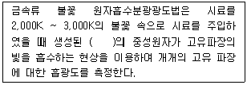
- 여기상태
- 이온상태
- 분자상태
- 바닥상태
(정답률: 75%)
49. 알킬수은-기체크로마토그래피에서 시료주입부 온도, 컬럼온도 및 검출기의 온도는? (차례대로 시료주입부온도, 칼럼온도, 검출기의 온도)
- 140~240℃, 130~180℃, 140~200℃
- 240~280℃, 250~380℃, 280~330℃
- 350~380℃, 340~380℃, 340~380℃
- 380~410℃, 420~460℃, 450~480℃
(정답률: 56%)
50. A폐수의 부유물질 측정을 위한 실험결과가 다음과 같을 때 부유물질의 농도는?
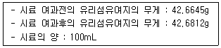
- 0.167 mg/L
- 1.67 mg/L
- 16.7 mg/L
- 167 mg/L
(정답률: 55%)
51. 불소화합물 측정방법을 가장 적절하게 짝지어진 것은?
- 자외선/가시선 분광법 - 기체크로마토그래피
- 자외선/가시선 분광법 – 불꽃 원자흡수 분광광도법
- 유도결합플라즈마/원자발광광도법 – 불꽃 원자흡수분광광도법
- 자외선/가시선 분광법 – 이온크로마토그래피
(정답률: 57%)
52. 다음은 총대장균군(평판집락법) 측정에 관한 내용이다. ( )에 내용으로 옳은 것은?
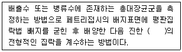
- 황색
- 적색
- 청색
- 녹색
(정답률: 66%)
53. 측정항목 – 시료용기 – 보존방법이 맞는 것은?
- 용존 총질소 – 폴리에틸렌 또는 유리 용기 – 4℃, H2SO4로 pH 2 이하
- 음이온 계면활성제 – 폴리에틸렌 – 4℃, H2SO4로 pH 2 이하
- 인산염 인 – 유리 용기 – 즉시 여과한 후 4℃, CuSO4 1g/L 첨가
- 질산성 질소 – 폴리에틸렌 또는 유리 용기 – 4℃, NaOH로 pH 12이상
(정답률: 37%)
54. 다음 그림은 자외선/가시선 분광법으로 불소측정 시 사용되는 분석기기인 수증기 증류장치이다. C의 명칭으로 옳은 것은?
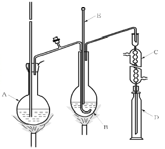
- 유리연결관
- 냉각기
- 정류관
- 메스실린더관
(정답률: 78%)
55. 유기물 함량이 비교적 높지 않고 금속의 수산화물, 산화물, 인산염 및 황화물을 함유하고 있는 시료에 적용되며 휘발성 또는 난용성 염화물을 생성하는 금속 물질의 분석에 주의하여야 하는 시료의 전처리 방법(산분해법)으로 가장 적절한 것은?
- 질산-염산법
- 질산-황산법
- 질산-과염소산법
- 질산-불화수소산법
(정답률: 65%)
56. 아연의 자외선/가시선 분광법에 관한 설명이다. ( )에 알맞은 것은?
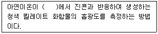
- pH 약 2
- pH 약 4
- pH 약 9
- pH 약 12
(정답률: 73%)
57. 불꽃 원자흡수분광광도법에서 일어나는 간섭 중 화학적 간섭은?
- 분석하고자 하는 원소의 흡수파장과 비슷한 다른 원소의 파장이 서로 겹쳐 비이상적으로 높게 측정되는 경우
- 표준용액과 시료 또는 시료와 시료 간의 물리적 성질의 차이 또는 표준물질과 시료의 매질 차이에 의해 발생
- 불꽃의 온도가 분자를 들뜬 상태로 만들기에 충분히 높지 않아서, 해당 파장을 흡수하지 못하여 발생
- 불꽃의 온도가 너무 높을 경우 중성원자에서 전자를 빼앗아 이온이 생성될 수 있으며 이 경우 음(-)의 오차가 발생
(정답률: 50%)
58. 비소표준원액(1mg/mL)을 100mL 조제하려면 삼산화비소(As2O3)의 채취량은? (단, 비소의 원자량은 74.92이다.)
- 37mg
- 74mg
- 132mg
- 264mg
(정답률: 50%)
59. 공장폐수 및 하수유량(측정용 수로 및 기타 유량측정방법) 측정을 위한 웨어의 최대유속과 최소유속의 비로 옳은 것은?
- 100 : 1
- 200 : 1
- 400 : 1
- 500 : 1
(정답률: 60%)
60. DO(적정법) 측정 시 End point(종말점)에 있어서의 액의 색은?
- 무색
- 적색
- 황색
- 황갈색
(정답률: 78%)
4과목: 수질환경관계법규
61. 시장, 군수, 구청장이 낚시 금지구역 또는 낚시 제한구역을 지정하려는 경우 고려하여야 할 사항이 아닌 것은?
- 서식 어류의 종류 및 양 등 수중생태계의 현황
- 낚시터 발생 쓰레기의 환경영향평가
- 연도별 낚시 인구의 현황
- 수질 오염도
(정답률: 49%)
62. 배출시설의 설치허가를 받아야 하는 경우가 아닌 것은?
- 특정수질유해물질이 발생되는 배출시설
- 특별대책지역에 설치하는 배출시설
- 상수원보호구역으로부터 상류로 10킬로미터 이내에 설치하는 배출시설
- 특정수질유해물질이 발생되지 아니하더라도 배출되는 폐수를 폐수종말처리시설에 유입시키는 경우
(정답률: 55%)
63. 수질 및 수생태계 환경기준인 수질 및 수생태계 상태별 생물학적 특성 이해표에 관한 내용 중 생물 등급이 [약간나쁨~매우나쁨] 생물지표중(어류)으로 틀린 것은?
- 피라미
- 미꾸라지
- 메기
- 붕어
(정답률: 75%)
64. 폐수무방류배출시설을 설치, 운영하는 사업자가 규정에 의한 관계 공무원의 출입, 검사를 거부, 방해 또는 기피한 경우의 벌칙기준은?
- 1년 이하의 징역 또는 1천만원 이하의 벌금에 처한다.
- 1년 이하의 징역 또는 500만원 이하의 벌금에 처한다.
- 500만원 이하의 벌금에 처한다.
- 300만원 이하의 벌금에 처한다.
(정답률: 70%)
65. 다음의 위임업무 보고사항 중 보고 횟수 기준이 연 2회에 해당되는 것은?
- 배출업소의 지도, 점검 및 행정처분 실적
- 배출부과금 부과 실적
- 과징금 부과 실적
- 비점오염원의 설치신고 및 방지시설 설치현황 및 행정처분 현황
(정답률: 67%)
66. 환경부장관은 대권역별 수질 및 수생태계 보전을 위한 기본계획을 몇 년마다 수립하여야 하는가?
- 3년
- 5년
- 7년
- 10년
(정답률: 76%)
67. 수질 및 수생태계 보전에 관한 법률의 목적이 아닌 것은?
- 수질오염으로 인한 국민의 건강과 환경상의 위해를 예방
- 하천·호소 등 공공수역의 수질 및 수생태계를 적정하게 관리·보전
- 국민으로 하여금 수질 및 수생태계 보전혜택을 널리 향유할 수 있도록 함
- 수질환경을 적정하게 관리하여 양질의 상수원수를 보전
(정답률: 67%)
68. 오염총량관리지역을 관할하는 시도지사가 수립하여 환경부장관에게 승인을 얻는 오염총량관리기본계획에 포함되는 사항이 아닌 것은?
- 해당 지역 개발계획의 내용
- 지방자치단계별·수계구간별 오염부하량의 할당
- 해당 지역의 점오염원, 비점오염원, 기타오염원 현황
- 해당 지역 개발계획으로 인하여 추가로 배출되는 오염부하량 및 그 저감계획
(정답률: 40%)
69. 측정망 설치계획을 고시하는 시기에 해당하는 것은? (문제 오류로 실제 시험에서는 모두 정답처리 되었습니다. 여기서는 1번을 누르면 정답 처리 됩니다.)
- 측정망을 최초로 설치하는 날
- 측정망을 최초로 측정소를 설치하는 날의 3개월 이전
- 측정망 설치계획이 확정되기 3개월 이전
- 측정망 설치계획이 확정되기 6개월 이전
(정답률: 74%)
70. 초과부과금 산정을 위한 기준에서 수질오염물질 1킬로그램당 부과 금액이 가장 낮은 수질오염물질은?
- 카드뮴 및 그 화합물
- 유기인 화합물
- 비소 및 그 화합물
- 6가크롬 화합물
(정답률: 56%)
71. 환경부장관이 폐수처리업자의 등록을 취소할 수 있는 경우에 해당되지 않는 것은?
- 파산서고를 받고 복권이 되지 아니한 자
- 거짓이나 그 밖의 부정한 방법으로 등록한 경우
- 등록 후 1년 이내에 영업을 개시하지 아니하거나 계속하여 1년 이상 영업실적이 없는 경우
- 배출해역 지정기간이 끝나거나 폐기물해양 배출업의 등록이 취소되어 기술능력·시설 및 장비 기준을 유지할 수 없는 경우
(정답률: 78%)
72. 1일 폐수배출량이 2,000m3 미만인 규모의 지역별, 항목별 배출허용기준으로 틀린 것은? (단, 단위는 mg/L)
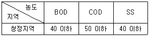
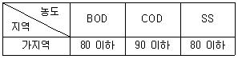
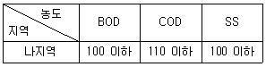
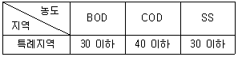
(정답률: 65%)
73. 비점오염원의 변경신고를 하여야 하는 경우에 해당되지 않는 것은?
- 상호, 사업장 위치 및 장비(예비차량 포함)가 변경되는 경우
- 비점오염원 또는 비점오염저감시설의 전부 또는 일부를 폐쇄하는 경우
- 비점오염저감시설의 종류, 위치, 용량이 변경되는 경우
- 총 사업면적, 개발면적 또는 사업장 부지면적이 처음 신고면적의 100분의 15 이상 증가하는 경우
(정답률: 56%)
74. 대권역 수질 및 수생태계 보전 계획에 포함되어야 하는 사항에 포함되지 않는 것은?
- 오염원별 수질오염 저감시설 현황
- 점오염원, 비점오염원 및 기타 수질오염원에 의한 수질오염물질 발생량
- 상수원 및 물 이용현황
- 수질오염 예방 및 저감대책
(정답률: 47%)
75. 다음은 수질오염감시경보의 경보단계 발령, 해제 기준이다. ( )안에 옳은 내용은?
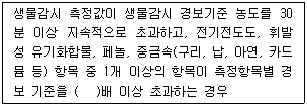
- 2배
- 3배
- 5배
- 10배
(정답률: 54%)
76. 사업장별 환경기술인의 자격기준에 해당하지 않은 것은?
- 제1종 및 제2종 사업장 중 1개월 간 실제 작업한 날만을 계산하여 1일 평균 17시간 이상 작업하는 경우 그 사업장은 환경기술인을 각각 2명 이상을 두어야 한다.
- 연간 90일미만 조업하는 제1종부터 제3종까지의 사업장은 제4종 사업장, 제5종 사업장에 해당하는 환경기술인을 선임할 수 있다.
- 대기환경기술인으로 임명된 자가 수질환경기술인의 자격을 함께 갖춘 경우에는 수질환경기술인을 겸임할 수 있다.
- 공동방지시설의 경우에는 폐수 배출량이 제1종, 제2종 사업장 규모에 해당하는 경우 제3종 사업장에 해당하는 환경 기술인을 들 수 있다.
(정답률: 54%)
77. 오염총량관리 조사·연구반이 속한 기관은?
- 시·도보건환경연구원
- 유역환경청 또는 지방환경청
- 국립환경과학원
- 한국환경공단
(정답률: 62%)
78. 폐수처리업의 등록기준에 관한 설명으로 알맞은 것은? (단, 폐수수탁처리업)
- 생물학적 방지시설을 갖추어야 한다.
- 법인인 경우는 자본금 2억원 이상이어야 한다.
- 개인인 경우는 재산이 5천만원 이상이어야 한다.
- 자본금 또는 재산은 등록기준에 포함되지 않는다.
(정답률: 61%)
79. 유류·유독물·농약 또는 특정수질유해물질을 운송 또는 보관 중인 자가 당해 물질로 인하여 수질을 오염시킨 경우 지체 없이 신고해야 할 기관이 아닌 곳은?
- 시청
- 구청
- 환경부
- 지방환경관서
(정답률: 59%)
80. 폐수처리업 등록을 할 수 없는 자에 대한 기준으로 틀린 것은?
- 피성년후견인
- 피한정후견인
- 폐수처리업의 등록이 취소된 후 2년이 지나지 아니한 자
- 파산선고를 받은 후 2년이 지나지 아니한 자
(정답률: 60%)
Cd(OH)2 ⇌ Cd2+ + 2OH-
Ksp = [Cd2+][OH-]2 = 4 × 10-14
산성수용액에서 OH- 농도를 증가시키면 Cd(OH)2 침전이 일어나므로, Cd2+ 농도는 감소한다. 따라서, pH를 11로 증가시키면 OH- 농도는 10-3 M이 된다.
Ksp 식에 OH- 농도를 대입하여 [Cd2+]를 구하면 다음과 같다.
4 × 10-14 = [Cd2+](10-3)2
[Cd2+] = 4 × 10-8 M = 4.48 × 10-3 mg/L
따라서, 정답은 "4.48 × 10-3" 이다.